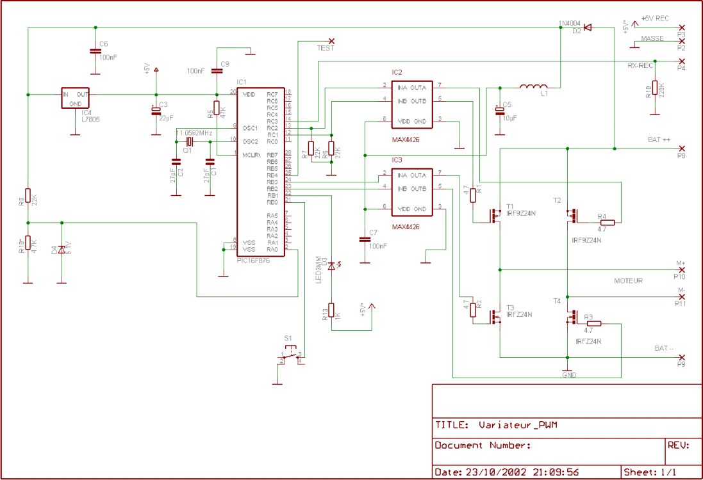
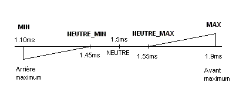
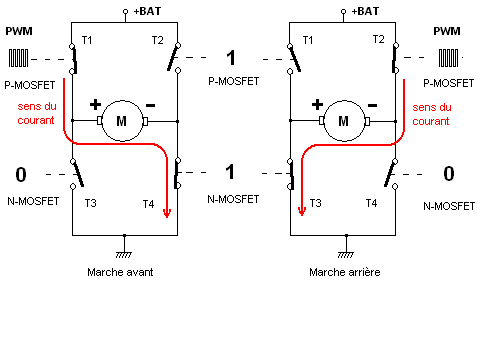
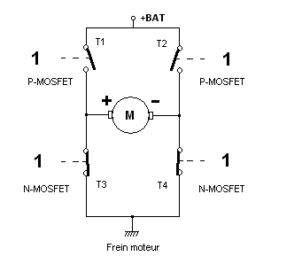
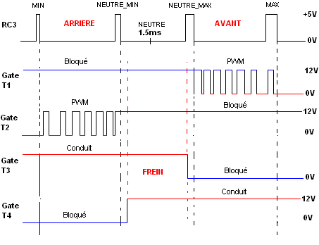
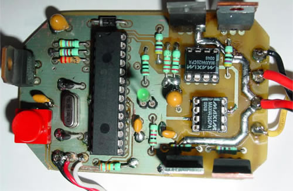
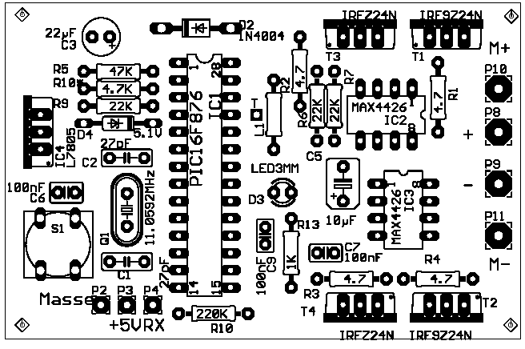
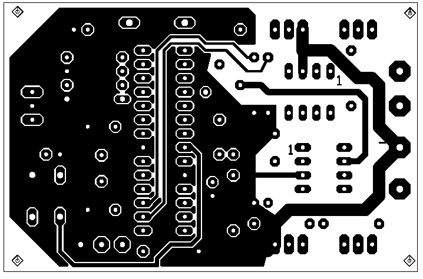
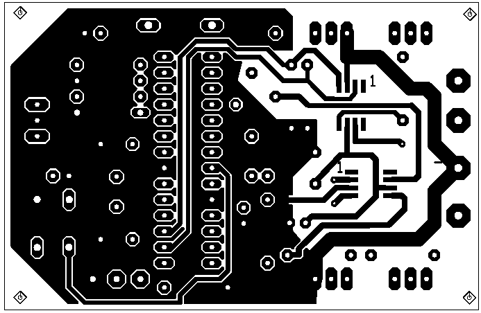
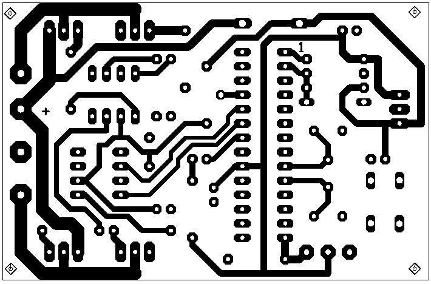

Variateur de vitesse PWM (PIC16F876)
Variateur de vitesse pour moteur à courant continu commandé en PWM, pour application de radiocommande.

I. Description du montage
📦 Télécharger le schéma et les typons (187 Ko)
Partie microcontrôleur :
Le cœur du variateur, un microcontrôleur PIC16F876-20 cadencé par un quartz à 11.0592 MHz (fond de tiroir), est alimenté en 5V par le régulateur IC4 (L7805). Ce régulateur peut être supprimé en cas d'alimentation du montage par la batterie du récepteur de radiocommande à travers la borne P3. Dans la configuration présentée c'est le variateur qui alimente le récepteur et ses servomoteurs via P3. Le régulateur est en mesure de fournir jusqu'à 1.5A à condition bien sûr d'y fixer un radiateur s'il chauffe exagérément. La diode D2 protège le montage des inversions de tension. La consommation du montage, sans le moteur, n'excède pas 17 mA. La batterie moteur de 12V est connectée entre les points P8 et P9 du montage.
Les résistances R9 et R10 constituent le diviseur de tension chargé d'adapter le niveau de tension appliqué à l'entrée RA0 du CAN 10 bits du µC. Le seuil de tension faible est fixé à 8.8V, ce qui correspond à un seuil de 1.425V pour le µC. Ce seuil est calculé ainsi : (8.8V−0.7V)×(R10/(R9+R10)) = (8.1 × 4.7) / 26.7 = 1.425V. Une modification de la valeur de R9 et R10 aura pour effet de fixer un autre seuil de tension faible. La diode zener de 5.1V (optionnelle) protège l'entrée RA0 du µC des tensions supérieures à 5V ; il faudrait avec ces valeurs de résistances que la tension d'alimentation excède 28V, ce qui n'est guère recommandé.
La LED D3, commandée par un niveau bas présent sur la sortie RB1 du µC, sert pour deux fonctions distinctes. La première pour signaler que la tension de la batterie est inférieure au seuil d'alerte (cette LED ne s'allume que si l'émetteur est en fonction). La deuxième fonction est associée au bouton poussoir S1 (entrée RB0) : elle permet à l'utilisateur de visionner les phases de la programmation des points de fonctionnement du variateur « MIN », « NEUTRE_MIN », « NEUTRE_MAX » et « MAX ». Les points de fonctionnement sont ensuite mémorisés en mémoire EEPROM. Ces points sont fixés par défaut à : 1.10 ms – 1.45 ms – 1.55 ms et 1.90 ms si vous ne voulez pas les programmer.

Les impulsions positives d'une période de 20 ms proviennent du récepteur par P4 et sont appliquées à l'entrée RC3 du µC. Un filtre logiciel rejette toutes les impulsions d'une durée inférieure à 0.8 ms ou supérieure à 2.2 ms, ainsi que celles qui n'entrent pas dans la fenêtre de mesure ouverte pendant 8 ms si nécessaire et fermée pendant 16 ms. La sortie RB4, « TEST », passe à l'état « 1 » en absence de signal reçu du fait d'une panne d'émetteur, de récepteur ou d'un brouillage (hors fenêtre de mesure). Cette sortie pourra signaler à un dispositif de localisation (buzzer) ou de sauvegarde le défaut.
Partie commande de puissance :
La commande de puissance utilise un pont en H constitué de deux transistors MOSFET de type P, T1 et T2, et de deux transistors MOSFET de type N, T3 et T4. Les MOSFET T3 et T4 sont continuellement bloqués ou passants, alors que T1 et T2 sont soit soumis à une tension découpée de rapport cyclique variable (PWM), soit bloqués alternativement.
En marche avant, T2 et T3 sont bloqués, T4 est saturé et T1 est commandé en PWM. En marche arrière, T1 et T4 sont bloqués, T3 est saturé et T2 est commandé en PWM.

Dans la zone du neutre, le moteur est freiné en court-circuitant ses deux pôles. Dans cette configuration du pont en H, les MOSFET T1 et T2 sont bloqués, T3 et T4 sont saturés.

Le choix des transistors fixera le courant moteur admissible. Avec des IRFZ24N (17A) et IRF9Z24N, le courant peut atteindre 12A (avec radiateurs), mais il est possible d'obtenir plusieurs dizaines d'ampères avec d'autres modèles (le « N » indique qu'une diode de roue libre est intégrée au transistor). En tout état de cause, les transistors MOSFET conviennent parfaitement du fait de leur résistance de passage très faible (RDS(on) 0.175 Ohm et 0.07 Ohm) et donc de leur faible chute de tension. En revanche, ces derniers (type N) conduisent à partir de VGS = 4.5V et sont parfaitement saturés pour un VGS de 10V, ce qui impose d'utiliser des drivers de MOSFET, IC2 et IC3. Les MAX4426 sont des doubles drivers de MOSFET, inverseurs, haute vitesse. Alimentés par la tension de la batterie moteur à travers D2, ils commandent les « Gates » des transistors avec le courant et surtout la tension appropriés. Le MAX4426 IC2 reçoit sur ses entrées 2 et 4 les deux signaux PWM générés par le PIC16F876 sur les sorties RC1 (PWM_AV) et RC2 (PWM_AR). IC3 est commandé par les sorties RB2 (AV) et RB3 (AR) du µC ; ses sorties saturent et bloquent les MOSFET T3 et T4, fixant ainsi le sens de rotation du moteur.
Le choix du µC PIC16F876 est dû en partie à sa capacité d'utiliser deux sorties PWM distinctes RC1 et RC2. Quand l'une de ces sorties PWM n'est pas utilisée, la ligne en question est positionnée en « entrée » (TRISCx=1) tout en étant forcée au « 0 » logique par les résistances R6 et R7 afin d'obtenir une tension positive (+12V) sur la sortie correspondante de IC2 et sur la gate de T1 ou T2 pour le bloquer.

Le moteur est alimenté entre P10 et P11. L'inversion de la polarité des fils du moteur vous permettra de faire tourner le moteur dans le sens voulu.
II. Réalisation du montage
Le circuit imprimé est un circuit double face ; contrôler la continuité des pistes à l'ohmmètre. Commencer par charger en soudure à l'étain les pistes qui vont aux MOSFET (P8, P9, P10, P11) afin d'augmenter le courant admissible par les pistes, puis souder les résistances, les supports de CI... Finir par le régulateur 5V et les transistors MOSFET. Sans trous métallisés, veillez bien à souder des deux côtés les composants qui doivent l'être ainsi que ceux qui sont à la masse. Si le courant consommé par le moteur est important, connecter directement les fils du moteur au « drain » des transistors MOSFET en les reliant deux à deux (T1-T3, T2-T4) par un morceau de tôle de laiton qui servira de radiateur au MOSFET.
Deux typons de circuit imprimé sont disponibles en téléchargement. L'un pour les MAX4426 en boîtier DIP8, l'autre pour les boîtiers 8SO.





III. Programmation des points de fonctionnement
Appuyez sur S1 en même temps que la mise sous tension. La LED s'allume et doit s'éteindre une fois l'émetteur branché et manche au neutre. Cette fonction permet de vérifier que le récepteur et l'émetteur fonctionnent correctement.
- Positionner le manche en position « MIN » (impulsion de durée minimum > 0.8 ms), appuyer sur S1, la LED clignote une fois par seconde.
- Positionner le manche en position « NEUTRE_MIN », appuyer sur S1, la LED clignote deux fois par seconde.
- Positionner le manche en position « NEUTRE_MAX », appuyer sur S1, la LED clignote trois fois par seconde.
- Positionner le manche en position « MAX » (impulsion de durée maximum < 2.2 ms), appuyer sur S1, la LED clignote quatre fois par seconde. Puis le variateur passe en mode de fonctionnement normal en tenant compte des quatre points programmés en EEPROM.
En cas d'erreur, comme par exemple le non-respect de l'ordre de programmation, la LED s'allume pendant 4 secondes puis le variateur passe en mode de fonctionnement normal avec les points de fonctionnement mémorisés précédemment (ou ceux par défaut). Pour obtenir un fonctionnement en « tout ou rien », soit pleine vitesse sans palier, il suffit, lors de la programmation, de suffisamment « rapprocher » les points « MIN » et « NEUTRE_MIN » ou « NEUTRE_MAX » et « MAX ».
Attention de bien positionner l'inverseur de canal de l'émetteur en position « NORMAL » afin d'obtenir une durée croissante des impulsions lors des quatre phases de programmation.
IV. Liste des composants
| Référence | Valeur / Type |
|---|---|
| C1, C2 | 27 pF |
| C3 | 22 µF / 16V |
| C5 | 10 µF / 25V |
| C6, C7, C9 | 100 nF |
| D2 | Diode 1N4004 |
| D3 | LED 3mm |
| D4 | Zener BZX55-5.1V |
| IC1 | PIC16F876 |
| IC2, IC3 | MAX4426CPA ou MAX4426ESA (Maxim), DIP8 ou 8SO |
| IC4 | Régulateur 5V L7805 |
| L1 | Self de choc |
| Q1 | Quartz 11.0592 MHz HC49/S |
| R1, R2, R3, R4 | 4.7 Ω 1/4W |
| R5 | 47 kΩ 1/4W |
| R6, R7, R9 | 22 kΩ 1/4W |
| R10 | 4.7 kΩ 1/4W |
| R11 | 220 kΩ 1/4W |
| R13 | 1 kΩ 1/4W |
| S1 | Bouton poussoir Micro-Cosmos réf. 33-1148 (Selectronic) |
| T1, T2 | IRF9Z24N |
| T3, T4 | IRFZ24N |